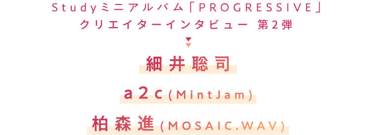

 Studyミニアルバム「PROGRESSIVE」発売記念 クリエイターインタビュー 細井聡司 a2c(MintJam) 柏森進(MOSAIC.WAV)">
7月24日のリリースまで目前に迫ったStudyのミニ・アルバム『PROGRESSIVE』。
座談会の第2回は、参加クリエイター陣が実際にどのように曲を作っていったのかを聞いてみた。
細井聡司、a2c（MintJam）、柏森 進（MOSAIC.WAV）の3名が持つそれぞれのメソッドを駆使して生まれた楽曲たちの裏側に迫る。
これを読めば『PROGRESSIVE』がさらに楽しくなること間違いなし！
天才たちによる貴重な音楽談義をじっくりご堪能あれ！
- 前回は『PROGRESSIVE』で楽曲を提供するにあたってどのようなオファーを受けたかという話をしましたが、そこからみなさんがどうやって曲作りに入られたのかをお伺いします。まずは細井さんの「打算だ!!!」ですが……。
-
細井聡司
最初にアニプレックスさんからある程度のキーワード的なものはいただいたんですけど、MintJamさんほど具体的な指示（前回記事参照）ではなかったんですよね。
-
安谷屋光生
(アニプレックス)細井さんとは直接打ち合わせするというとことで、そこまで書いてなかったかもしれないですね。
-
細井聡司
そのときもわりと「自由に」と言っていただいたと思います。最初は僕の、過去のどの曲を気に入っていただきオファーをいただいたのかよくわからなかったんですけど、打ち合わせの段階で「過去の焼き直しじゃなくていい」という話になったので、ではそこは一回全部取っ払っちゃって、あくまで僕は3人の声や『ぼくたちは勉強ができない』という作品の世界観に対して、自分のアプローチできるところを考えようと思ったんです。
- 最初にお話しいただいた、今の自分のアプローチでやろうと。
-
細井
あと僕は、普段はヘヴィーな曲というか、暗い曲が多いんですけど、さすがにこのコンセプトのなかでは暗い曲は合わないとわかっていました。かといってアイドルっぽい曲やポップな曲が得意ではないので、あまり中途半端なものにもしたくないなあと思っていたんですね。あくまで自分のカラーを出したものにしたうえで、この3人のフレッシュさを出すにはどうしたらいいか悩みまして。
- そこで生まれてきたのが今の「打算だ!!!」のアプローチになるわけですね。
-
細井聡司
最終的には曲調的には明るめでポップでアップテンポで、というのはあったんですけど、僕としてはマイナー進行であったりする部分を多くして、その上にかわいい声が乗ればかわいい曲になるだろうなっていう勝算はあって作りました。ただデモの段階ではシンセでメロを作っているので、そこがどう伝わるかなっていうのは不安でありながらデモを作って提出しましたね。
-
安谷屋光生
(アニプレックス)細井さんにお渡ししたリファレンス（参考資料）としては、「アップテンポで、文系脳理系脳筋肉脳で悪いか」、あと「少しとんがった曲、とにかくド派手で攻撃的な曲、ただしダークではない」という内容で……ちょっと抽象的ですね（笑）。
-
細井聡司
ただ逆に、この感じの曲、例えば誰かの何かの曲というリファレンスじゃなかったおかげで自由にできたっていうのはあるので、それはありがたかったですね。
- 完成した「打算だ!!!」を聴くと、たしかにかわいらしいとはちょっと違うシャープなサウンドで、そこにストリングスなどが入るクールな印象ですが、そこにStudyの声が乗ると不思議なキュートさが出ますよね。
-
細井
やっぱり3人が乗って、そこで初めて完成する曲でしたね。実は最初に来兎さんの「ready STUDY go!」を聴かせていただいて3人の声のイメージしていたんですけど、曲が良すぎてどうあがいても僕はこうならないってわかってはいたんですよ。それでプレッシャーはあまりなくなって、あときっとほかの方がちゃんとした曲を作るので（笑）、じゃあ僕は変化球でいいのかなって安心感はありました。
- ちなみにこの曲での、くまのきよみさんの歌詞はいかがでしたか？
-
細井
「あ、すごいな」って思いました。まず”打算”っていう言葉を出してくるのはすごいなと。言葉遊びが歌詞の中でたくさん出てきて、歌詞を読んでさらに意味がわかるところはありますよね。「打算ダービーム」とか、そうとうエッジが効いている歌詞だなと思って。
- 続いてはa2cさんの「すべてが［x］の世界線」ですが、かなり緻密な概要書をもらってからは具体的にはどう曲作りを進めていきましたか？
-
a2c
いただいた概要書のワードのほかに、MintJamの作品で「手紙」という曲があるんですけど、それをリファレンスとしていただきました。多分テンポ感やコード進行を参考までにという感じで提示していただいたんですね。「手紙」って「中二病」っぽい曲ではなく、「ハイ」でもなく「脳内麻薬」も出てないので（笑）、じゃあそれをどう近づけようかなと。そこで概要書と「手紙」のふたつのいいとこ取りのような方向性にしようと思って。
- そこから3人が歌うものとしてイメージしていったと。
-
a2c
最初はこういうコンセプトの、3人組のユニットさんとして歌うとしたら…っていうのはちょっと悩んだところだったんですけど、ひとまずそれは置いておいて、ソロ・シンガーさんに歌ってもらうとしたらこういうメロディラインでこういう進行で、時々メリハリつけてっていうイメージを描いていくことにしました。そこに簡単なリズム、ベース、ギターを加えていくんですけど、僕の場合は大体ギターでコード進行を軽くラフで録って、そのあとメロディを録って、そのときギターで録ったキメのポイントに応じてリズムを合わせて作っていきます。あとはストリングスのアレンジラフもちょっと入っていたかもしれないですけど、それをデモにして形を作っていきましたね。
- 3人の声が入るとロッキンなサウンドのなかでメロディが際立つ、とりわけサビの広がりが印象的に聴こえます。
-
a2c
確かサビとBメロのメロディやアレンジは最初に提出したバージョンの時点で「これでいいじゃないでしょうか」とレスポンスをいただいたんですけど、Aメロは今のよりもうちょっとギターがハイゲイン気味だったので、もうちょっときらびやかで爽やかにという戻しだったと思います。
- やはりStudyが歌うということでフレッシュさというものは意識しましたか？
-
a2c
そこはかなり意識しました。今回はミックスもやらせていただいたんですけど、リズム隊をはじめギターも録り音は太めだったので、そこは爽やかに軽く、全体がちゃんと見えるようなミックスにしようと心がけて軽快に聴こえるような形に持っていきました。
- MintJamの魅力のなかでも骨太さ、というより爽やかさが感じられる仕上がりですね。
-
a2c
ああ、そう感じていただいてよかったです。やっぱり歌が入ったら変わりましたよね。「あ、この歌だったらこうだよな」って見えてくるものがあって。作り手としても新鮮でしたし、歌にインスパイアされた部分はとても多かったと思います。
- また、この曲でのこだまさおりさんの歌詞についてはいかがですか？
-
a2c
僕は漠然としたイメージで作っていたところを、こだまさんの歌詞がStudyのために明確な方向性を持たせてくれたと思って、ただひたすらに感動していました。特にBメロの頭の「神様」というフレーズとか2サビ後の間奏の前のセクションですね。「神様」とか、「もうこれしかないでしょ」っていうぐらいオケの感じとかまでしっかり汲んでいただいて言葉を選ばれていただいているんだって、「さすがだな」と思いました。
- では「引き出せ！ポテンシャル」ではいかがでしたか？
-
柏森
今思い出したんですけど、「ready STUDY go!」と「セイシュンゼミナール」のサビの出だしが「カノン進行」なんですけど、途中で安谷屋さんに「うちもカノン進行で大丈夫ですか？」って聞いたんですよ。
- いわゆるパッヘルベル「カノン」と同じ、J-POPなどでも使われる王道の進行ですね。1音ずつ下がっていく……言われてみればたしかにどちらの曲もカノンですね。
-
柏森
もちろん別に曲が似通っているというわけではなくて、どちらもただのカノン進行ではないし、アニソン的にいちばんグッとくる展開を持っているんですね。ただ自分の曲でその展開を使ったら真似になってしまうしどうしようっていうのはありました。
-
安谷屋光生
(アニプレックス)デモのファイル名に「カノン進行」と書いてありましたね。
-
柏森
なので、同じようなコードワークを使わなかった結果「引き出せ！ポテンシャル」はアルバムのなかでもいちばんストレートでシンプルなものなんじゃないかなって思っています。何も装飾していないというか。
- 完成した曲だけ聴くとシンプルとは到底思えないですが……（笑）。
-
柏森
アルバム全体聴かせていただいたんですけど、ギターは堀崎（翔）さんに録っていただいたんですけど、多分アルバムで唯一美しいピアノも美しいストリングスも入っていないなと思っていて（笑）。
- そういう電子音中心のハイパーなサウンドがいわゆる電波ソングと呼ばれるものですよね。この曲でもさまざまな音が詰め込まれています。
-
柏森
前回「2003年が重要な年だ」という話がありましたけど、ひとりで完結できるDTMで曲が作れてネットが発表できるようになったときに、当時すでにシンセサイザーにたくさんのプリセット（初期段階で機材に入っている音）が入っていたんですね。ただこれだけ多いと、実際に曲を作るときはそのほとんどは使われないんだろうなって、使いきれないんだろうなっていうのがあったんですよ。
- プリセットのなかでも定番のものばかり使うようになって、使われない音は膨大に存在すると。
-
柏森
僕は自分の音楽を「情報過多音楽」っていうんですけど、アレンジの段階で使われなさそうな音をたくさん使って派手にしていくっていうのをやっていたんですよ。2003年当時、僕らが電波ソングを始めたのは「おしゃれなものへの抵抗」というか、「おしゃれでクールなものだけが音楽ではないだろう」っていう気持ちがあって、R&Bやヒップホップの真逆を行こうとして音楽を作っていたんですよ。そこで今回の曲でいうと、ベースのフレーズとかコードのフレーズも大事なんですけど、「その上に何が乗るか」っていうのを重要視していて。例えばサビの上には僕の好きなアーケードゲームのFM音源とかをずっと鳴らしているんですよね。もちろん、そうなるとインパクトの強い音になるので、ボーカルを食っちゃわないように音量も計算しないといけないんですけど。それはミックスの段階で「ここはこれだけ上げてください」っていうせめぎ合いが発生するんですけどね。
- あとこの曲は、Aメロで『ぼく勉』のキャラクターらしいセリフの掛け合いが入りますが、ここはどう作られたのですか？
-
柏森
僕はもともとメロディが作りたいタイプなので、ラップとか掛け合いはあまり得意じゃないんですよ。なのでとりあえず、「Aメロのメロディはこういうので、ここの小節にセリフが入ります」っていうのをやって作詞のyksbさんに渡します。なのでそれに応じて譜割が変わったりしましたし、最初は小節に文字が入らなすぎて歌っている途中でぶった切ってセリフが入るような、漫才みたいな感じになっちゃって（笑）。そこをうまく整頓して今の形になったんですね。
- 歌詞も含めて、そこは緻密に計算しながら曲を作っていくわけですね。
-
柏森
yksbさんも歌詞を書くのが早くて、曲を投げたら次の日に返ってくるくらいなんですね。なのでそこは何度もメールで細かくやりとして、曲を投げて歌詞をもらってまた曲を投げて……という感じで完成まで持っていきました。